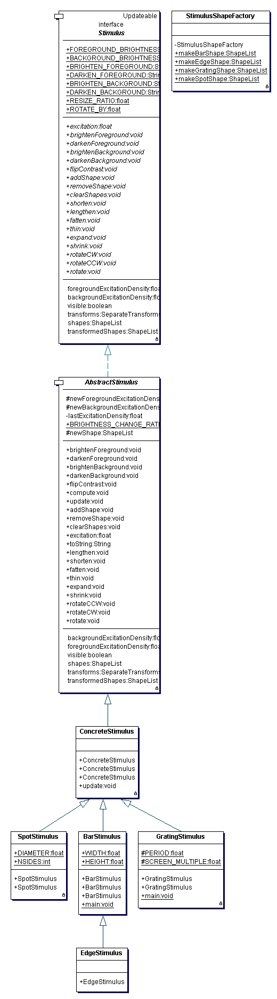

|
The Physiologist's Friend Simulation API | ||||||||
| PREV PACKAGE NEXT PACKAGE | FRAMES NO FRAMES | ||||||||
See:
Description
| Interface Summary | |
|---|---|
| ColorStimulus | A color stimulus has a foreground and background color. |
| Stimulus | Interface that a stimulus has to implement. |
| Class Summary | |
|---|---|
| AbstractStimulus | Provides default implementations for a stimulus, including it's foreground and background brightness, its shapes' container, and the transform applied to the shapes. |
| BarStimulus | A stimulus consisting of a single bar. |
| ColorStimulusImpl | Default implementation of the ColorStimulus interface. |
| ConcreteStimulus | Provides a generic implementation of a stimulus. |
| EdgeStimulus | A stimulus consisting of an edge, with reference (mouse) position centered along edge of the bar. |
| GratingStimulus | A grating stimulus, which consists of a set of BarStimulus with a specified spatial period. |
| SpotStimulus | A stimulus consisting of a single bar. |
| StimulusShapeFactory | A helper class with static methods for making standard stimulus shapes. |
The stimuli. A stimulus is a hierarchy of objects.
At the core is some geometry, a ShapeList. A ShapeList
is Transformable, which means that is
can be transformed in a number of different ways as a whole.
In the Stimulus, (more concretely,
an instantiaion of ConcreteStimulus),
the Transformable ShapeList is
wrapped up in a SeparateTransforms. The transforms are actually an instance of
ConcreteSeparateTransforms, wrapped inside a synchronizer
SynchronizedSeparateTransforms.
These transforms, along with the shapes, specify the actual shape of the
stimulus displayed on the TangentScreen and used to compute the Photoreceptor
responses. In fact the Stimulus must be given to the Photoreceptor on construction so that the Photoreceptor
knows how to compute its response to the Stimulus.
Concrete stimuli can be built using the static methods in StimulusShapeFactory.
Because the stimulus is given to the photoreceptors on their construction, it is not easily possible to change it after the simulation is constructed. Instead, to change the shape of the stimulus, you can change the geometry of the stimulus, e.g.:
ShapeList newShapes=StimulusShapeFactory.makeBarShape();
stimulus.getTransforms().setGeometry(newShapes);
Here is the UML diagram for this package:

|
http://www.ini.unizh.ch/~tobi/friend | ||||||||
| PREV PACKAGE NEXT PACKAGE | FRAMES NO FRAMES | ||||||||